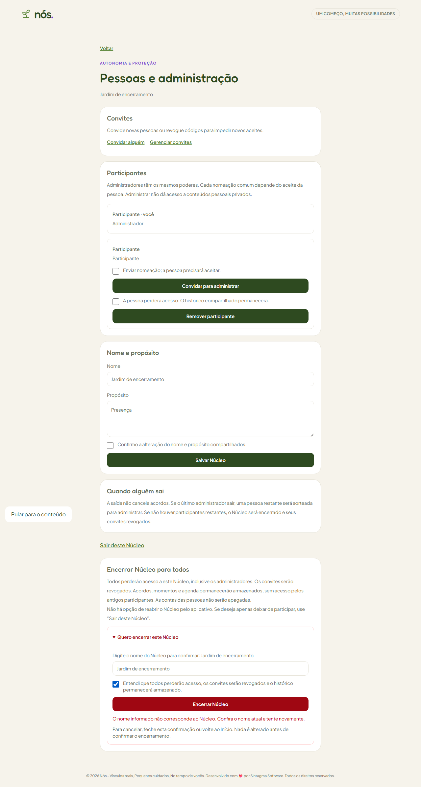
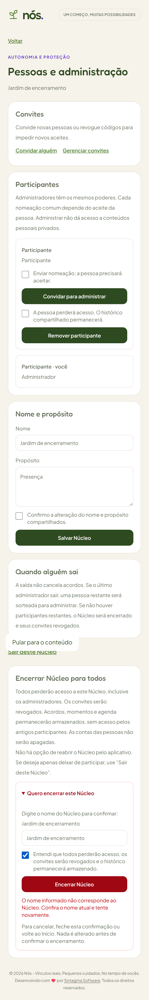
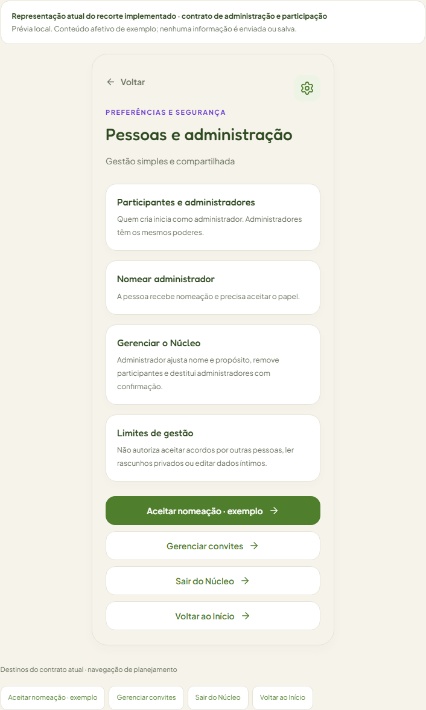
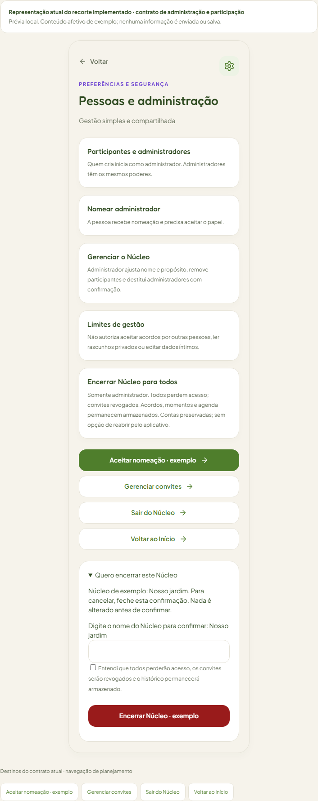
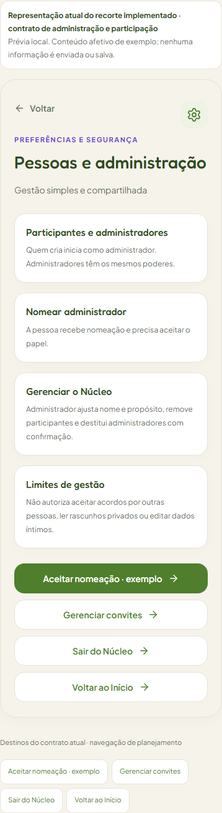
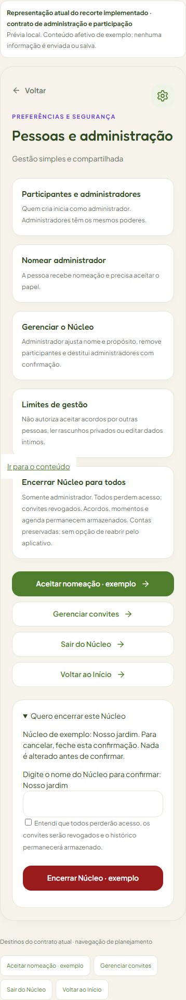
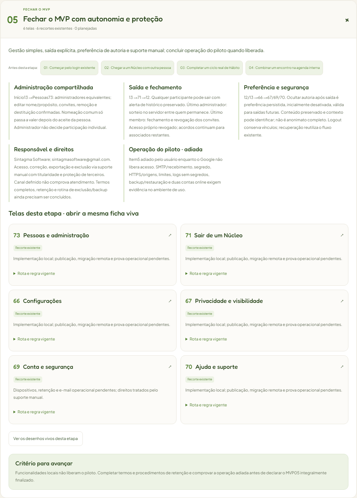
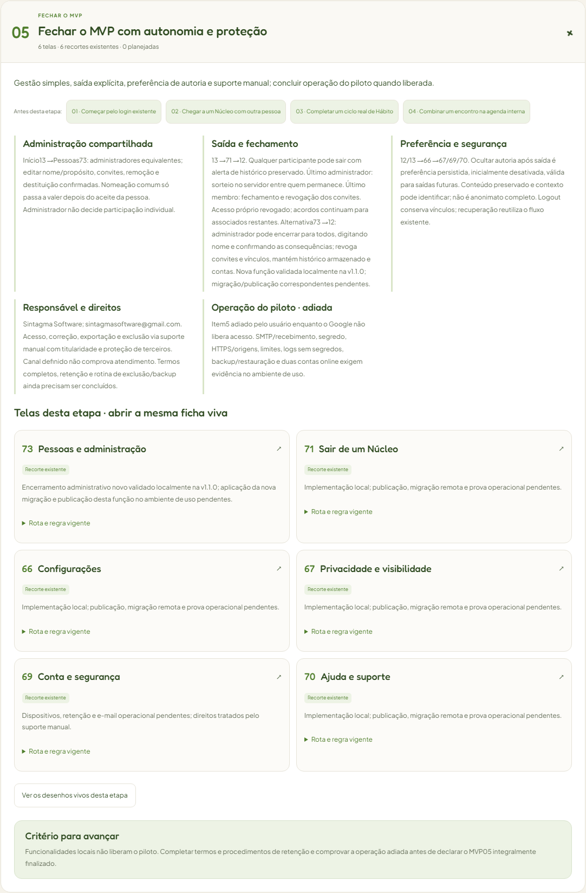
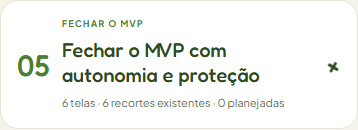

Abrir Tela73 no Atlas vivo
v1.1.0 — Encerrar o Núcleo para todos
15/10/2026. Administrador confirma o nome e a perda de acesso de todos. Convites são revogados; histórico e contas permanecem armazenados. Sem reabertura pelo aplicativo. Implementação local; publicação e nova migração no ambiente remoto pendentes.
As imagens usam exemplos e contas temporárias locais. Os recortes do Atlas expandem a altura para permitir conferir todo o conteúdo. Nenhum dado de produção foi utilizado. A mensagem de nome incorreto nas capturas do aplicativo registra a tentativa anterior: preencher novamente e marcar ciência permite novo envio.
Aplicativo — confirmação após validação de nome
Computador — Pessoas e administração, aviso e confirmação
Celular — mesmo fluxo, sem rolagem horizontal
Atlas — antes e depois
Computador
Antes — gestão sem encerramento coletivo
Depois — controle administrativo e formulário ilustrativo
Celular
Antes
Depois
MVP (produto mínimo viável) — etapa05
Computador
Antes
Depois — alternativa administrativa73 →12
Celular
Antes Depois
Depois
Validação:105 testes SQL,10 testes autenticados, tipos/build, Atlas/visão global e revisão estática independente. Os resultados completos estão no registro da entrega.